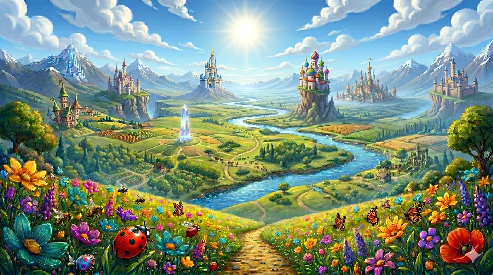
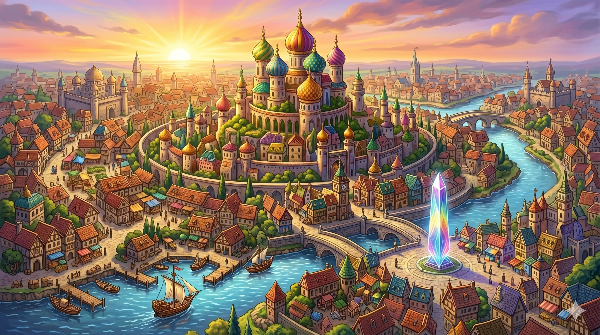
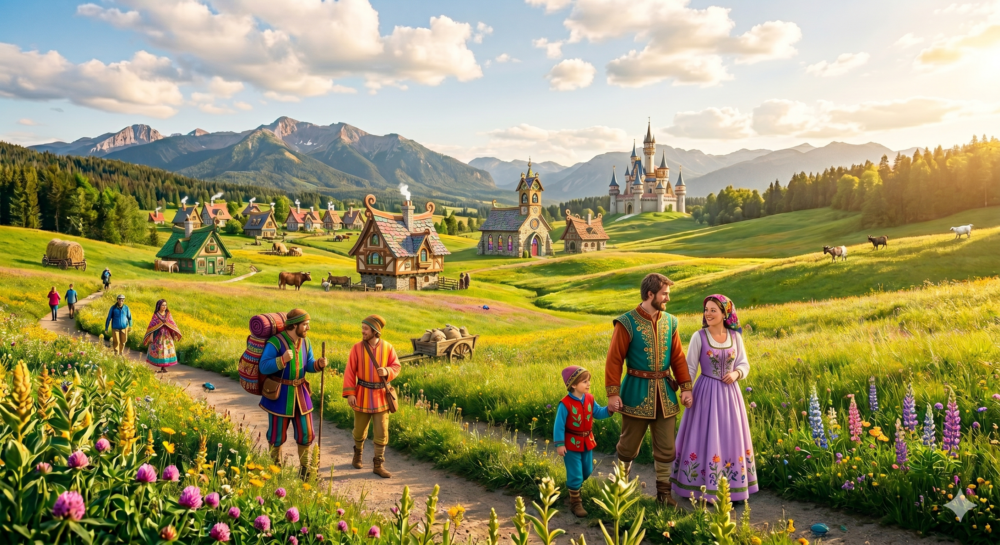
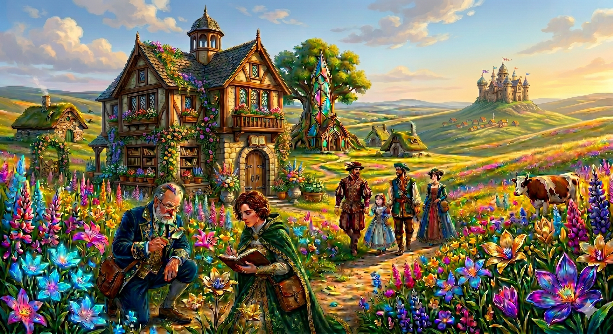
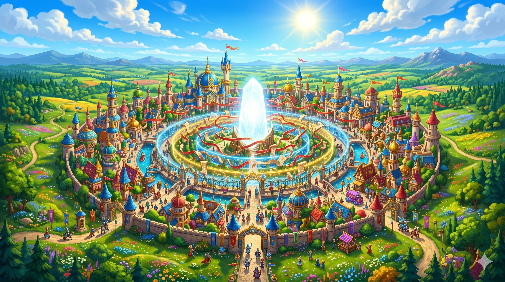
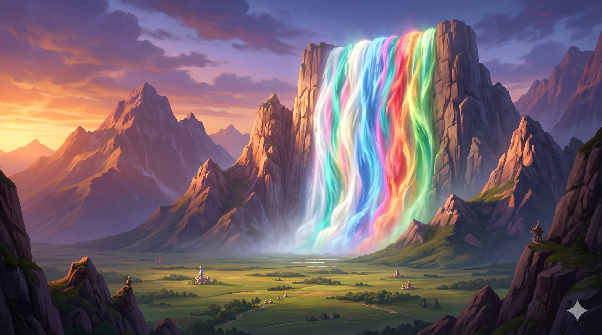
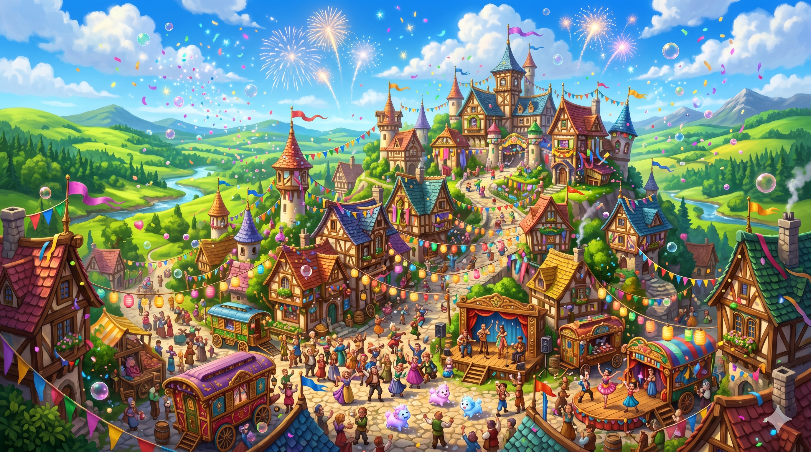

Welcome, Traveller
A practical guide to the continent of Pogglewog and the wider world of Anavale
You are reading the Anavale Traveller's Compendium — a collection of observations, records, and accumulated wisdom gathered by scholars, wanderers, merchants, and at least one extremely well-travelled tortoise. It is not complete. It is not official. It is, however, honest, which is more than can be said for several of the Formery's pamphlets.
Anavale is a world that rewards attention. Pay attention to the color of things. Pay attention to the creatures. Pay attention when the Bumble Frogs go quiet — they are almost never quiet, and when they are, something has happened or is about to.
This compendium is organized into sections covering the world's magic, its regions, its creatures, its organizations, and a final section of rumours that the editorial committee insists on including despite ongoing disagreement about their accuracy.
Use the navigation on the left to explore. Begin wherever your curiosity takes you. That is, after all, very much in the spirit of Anavale.
A note on navigation: Throughout this compendium, important terms are underlined and bold and may be clicked to navigate directly to the relevant entry. In Anavale, everything is connected. This compendium tries to reflect that.
The Gigglegloom
The living magical force woven through all things
The Gigglegloom is what most people mean when they say "magic" in Anavale, though scholars and the Gigglegloom Conclave's licensing department would like it noted that this is an oversimplification they find professionally upsetting.
The Gigglegloom is not a tool. It is not a resource in the conventional sense. It is a living force woven through every thing that exists in Anavale — through the roots of trees, the water in rivers, the warmth of sunlight, and the bodies of every creature from the largest Glacial Serpent to the smallest Fluffet. It responds to emotion. It responds to intent. It has opinions about what it is asked to do.
Practitioners — those who can consciously direct the Gigglegloom — develop a natural affinity for one of four types, each with its own character, color, and personality. Wild Surges — moments when the Gigglegloom does something without being asked — occur occasionally in areas of high concentration and generally produce effects that are dramatic, harmless, and very difficult to explain afterward.
The following spells are known to practitioners across Anavale. Each is aligned with one of the five Gigglegloom categories — though some draw from multiple sources, or from the Gigglegloom broadly.
Color & The Dimming
What color means in Anavale, and what its absence means
In Anavale, color is not decoration. It is the Gigglegloom made visible. Every colored thing holds a fragment of the world's magic within it. This is not metaphorical. A red apple is alive with red in a way that a grey stone is not. The vibrancy of a place reflects the health of its Gigglegloom — and the health of its joy.
A community full of color is, in the most literal sense, a community full of life. A community losing its color is a community in distress, whether or not it has noticed yet.
The Fading is the first stage of color loss — colors muting slightly, joy becoming a little harder to access, laughter arriving a moment late. Most people in affected regions live at this stage without realizing anything is wrong. It is subtle by design.
The Dimming is the second stage. Full greyscale. Joy is not felt — only remembered. People and creatures at this stage continue to function, continue to eat and sleep and speak, but the light has gone out behind their eyes. Grey Fluffets still try to bring acorn gifts. The acorns are also grey.
There is no third stage. The Dimmed do not become something else. They simply remain — in a world they can no longer feel. This is the goal of those who cause the Dimming. Not conquest. Not cruelty for its own sake. Simply quietude.
The Gods
As understood by the faithful, the scholars, and those caught in between
Anavale has five gods, though theologians will argue at length about whether certain of them are truly independent deities or aspects of others. This argument has been ongoing for three hundred years. It has not reached a conclusion. The gods themselves have not weighed in, which the Veilborn consider significant and everyone else considers inconclusive.
Caparia
The central heartlands of Pogglewog

Caparia is the heart of Pogglewog — the largest, most diverse, and most politically complex region on the continent. It is home to lush meadows, sparkling inland seas, and the most colorful cities in Anavale. The sun is overhead here, which the Brightcreed considers cosmically appropriate.






The Solenmere
The bureaucratic and highly colorful heart of Caparia
The Solenmere is the political and cultural heart of Caparia. Situated along the great Mirrenflow river, it is the most sprawling and densely populated nation in the region, and its capital, Solenveil, is considered the most colorful city in all of Anavale. Color maintenance is not merely custom here — it is law. A faded building receives a restoration crew within a single week. The social consequences for allowing a storefront to fade are considerably harsher than the modest fine.
The Solenmere is governed by the Caldenric Accord, a beloved 24-member representative democracy with a rotating Chancellor. They are widely considered kind and fair — and occasionally hilariously indecisive. Population numbers are meticulously (if inefficiently) tracked by The Formery, who have maintained an uninvited office inside Confederation Hall for sixty years.
The Solenmere is famous for the Welcome Table custom, in which colored cloth is displayed to signal social availability to guests. Disputes are settled not by courts but by trained Color Readers — skilled mediators who read emotional states through color and guide conflicting parties toward resolution. They hold a politely competitive rivalry with the Aurentum monarchy of Sohot, and view slower governments such as Nombi's Deepchill Accord as slightly exhausting.
The Mirrenflow promenade is the grand social artery of Solenveil. Confederation Hall — the seat of the Pogglewog Confederation — is here, and hosts representatives of all six Confederation nations. Note: Prismhold is geographically within Solenmere's territory, but operates as a fully independent city-state under the Chroma Bureau.
The Nimblewood thieves' guild operates quietly within Solenmere, adhering strictly to their code of never stealing from those who cannot afford it. Criminal activity is otherwise mostly non-violent — colorful vandalism, bureaucratic forgery, and magical licensing fraud.
The Bunari
The free-spirited maritime nation of the eastern coast
The Bunari are a seafaring people who have built an entire national identity around the ocean, personal freedom, and perpetual movement. Their territory stretches along the eastern Rabbit Coast and Bunbun Bay, but a highly significant portion of their population does not live on land at all — they live permanently on ships, in flotilla-towns that drift and regroup with the seasons.
The nation is governed by a Merchant Council with an executive Harbor Master. Their population is famously difficult to track accurately, as census-takers must first find the ships. The Bunari view the rest of the Confederation as slightly too grounded, but happily manage the bulk of Caparia's sea trade.
If a Bunari citizen stays in one physical location for more than two years, the community stages concerned check-ins. Freedom of movement is not just valued — it is considered a measure of personal health. The Bunari are friendly and open, holding a subtle bias against overly strict land-based laws and viewing those who never travel as slightly tragic.
Mirrenport is Caparia's major port city. The Shimmer Shoals — a brilliantly glowing, bioluminescent section of Bunbun Bay — are considered one of the most beautiful natural sights in the region. The bay is home to the semi-sapient Shimmer Rays, who glow in patterns that some Brightcreed scholars believe carry meaning.
The Grusk underworld occasionally uses Bunari ports to quietly move Drains and extracted color across borders. Sailors periodically report the unsettling Stillborn Tide — grey bioluminescence creeping into unmonitored shipping lanes, a quiet sign that the Vareth's reach is testing the edges of the coast.
The Zippan
The proud, joyful culinary masters of the western hills
If you have eaten well on your travels through Caparia, you have almost certainly eaten Zippan food. The western hill nation is not shy about this. They will tell you. At length. At every meal. The Zippan are farmers, brewers, builders, and craftspeople who have elevated the preparation of food and the hosting of festivals into their highest cultural and spiritual practice.
The Zippan are governed by a Council of Guilds, structured so that no single guild holds more than three seats. This produces lively, argumentative governance that tends to resolve itself when someone brings food. Their major hub is Bumbleton, surrounded by idyllic farming villages.
Craft pride is enormous and completely non-negotiable. The Zippan resolve all disagreements through The Craft Challenge — both parties make something, the community judges, and the matter is closed. They view sloppiness as a character flaw and anyone who insults a crafted good risks a lengthy, passionate response. They are undisputed Brightcreed festival champions across the Confederation and will accept no debate on this point.
The Goober Bounce Meadows — vast central meadowlands famous for an extraordinary density of Bounce Beetles — produce a near-constant "boing" sound on warm afternoons. Festival specialties include Zippan Fizz-Tarts (pastries with popping jam), floating mugs of Cloudwhump Cotton-Cider, and voice-changing Gigglegloom Gummies.
The Breth Chaine — a creature slavery ring — attempts to operate quietly on the rural fringes of Zippan territory, poaching healthy creatures. Dimming is kept effectively at bay by the sheer volume of festivals, which actively push the grey back. A Zippan celebration is, whether intentionally or not, an act of magical resistance.
The Dingurei
The scholarly, question-driven archivists of the eastern forests
The Dingurei have lived in the Dingu Forest for three centuries, studying it. They have also been studying the Partition Scar — a literal crack in the bedrock of the forest floor where raw Gigglegloom seeps directly into the world — for just as long. They have not finished. They are not sure they ever will. They consider this acceptable.
Governance is handled by the Assembly of Scribes, where representation is earned strictly through scholarly achievement. Children are not given standard names — instead, they are each given a question they are expected to spend their entire life answering.
The Dingurei maintain more complete Gigglegloom surge records than the Chroma Bureau in Prismhold, a fact the Bureau acknowledges with diplomatic discomfort. An ongoing academic cold war simmers between the two institutions over who holds the most accurate magical records. The Dingurei are highly respected across the Confederation, though viewed as slightly detached.
Vellum is the capital city, built entirely around the Great Index — the most comprehensive magical library in Anavale, organized by a classification system so intricate that three full-time Scribes are devoted solely to maintaining its table of contents. Inkwell is the major supporting town, dedicated entirely to producing the paper and binding materials that Vellum consumes at an alarming rate. The Partition Scar — a crack in the bedrock where raw Gigglegloom seeps directly into the world — has been under continuous Dingurei study for three centuries. Scholars from across Anavale come to observe. The Dingurei issue access permits. The waiting list is eleven years long.
Drak, the Vareth's twisted sorcerer lieutenant, operates somewhere deep within Dingurei borders — maintaining a secret, hidden archive of corrupted Gigglegloom research. Localized pockets of Stage 1 Fading have appeared near his concealed outposts. The Dingurei have noticed the anomalies. They are studying them carefully. They have not yet realized what is causing them.
The Janiveth
The resilient, mountain-dwelling record keepers of the south
The Janiveth are a people defined by endurance. They live in high-altitude fortresses and deep-valley clan settlements in the Jani Forest and the mountain range that marks Caparia's southern border with Sohot. They do not celebrate easily. They do not rush decisions. They have survived longer than any other mountain civilization on the continent, and they consider this sufficient evidence that their approach is correct.
The nation is governed by an Elder Clan Assembly requiring a two-thirds majority to pass decisions — more flexible than Nombi's full consensus, but not by much. They control the mountain passes between Caparia and the desert south, a geopolitical leverage they exercise with great, deliberate restraint.
The Janiveth maintain the Winter Count — a 400-year unbroken record in which every single year is recorded as a single, community-chosen color. This living color archive is both historical record and magical instrument: it lets the Janiveth notice even the subtlest drop in regional color saturation across generations. They view the central Caparian nations — Solenmere, Zippan — as slightly frivolous and soft. They say this with the quiet certainty of people who have never needed rescuing.
The treacherous mountain passes leading into the Desolate Wastes of Sohot are the Janiveth's most strategically significant feature. These passes are the primary overland route between the two regions. The Janiveth have kept them open, protected, and carefully monitored for centuries.
Unaligned smugglers and occasional Grusk operatives attempt to move illicit color or Voidblush through the southern passes, bypassing the Janiveth checkpoints. They are rarely successful. The Janiveth are very patient, and the mountains are very tall.
The Opuri
The quiet, balanced stewards of the northwestern woods
The Opuri have lived in the Opu Forest as long as the forest has existed. They are the smallest nation in the Confederation and the quietest. They do not seek attention. They do not expand their borders. They listen — to the wind, to the leaves, to the slow, patient communications of The Patient One, a 10,000-year-old Mosskin who has accumulated so much Gigglegloom over its existence that it has developed personality, intention, and something approaching wisdom.
The Opuri are guided by the Council of Listeners — twelve members chosen not by election or appointment, but by the apparent preference of the Patient One, communicated through leaf arrangements. The Chroma Bureau has asked, several times, for clarification on how this process works. The Opuri have not provided it.
The Opuri do not worship the Mosskin. They do not study it or attempt to interview it. They live alongside it as a neighbor — respectfully, quietly, without demanding anything in return. This is the closest human-Mosskin relationship known to exist anywhere in Anavale. Their culture is defined by deep listening and ecological harmony, and they carry a strong distrust of anyone who treats the Gigglegloom purely as a mechanical resource to be extracted.
Mosswhisper Grove is the known location of the Patient One — the oldest and most aware Mosskin in Caparia. It communicates through leaf arrangements, which the Council of Listeners has spent generations learning to interpret. The Opuri are the only nation in Anavale with a statistically equal distribution of all four Gigglegloom types. The Chroma Bureau considers this impossible. The Opuri have not commented.
The Vareth and the Grusk actively avoid Opuri territory. The presence of the 10,000-year-old Mosskin acts as a natural deterrent — the Dimming cannot take hold in a place so thoroughly saturated with living Gigglegloom. External poachers are the only real crime issue. They are handled swiftly and without drama. The forest does not forget.
Nombi
The frozen north, where the aurora speaks
Nombi is cold, densely forested, and old. The kind of old that doesn't announce itself but sits quietly in the roots of trees and the cracks of rocks, watching. The aurora lights here — shifting greens and blues and golds — are considered by most Nombi cultures to be a form of divine communication. They disagree about what, specifically, is being communicated, which has produced three distinct religious and philosophical traditions and a great deal of excellent debate.
Sohot
The blazing south, where ancient things persist
Sohot is a land of extremes — blazing desert, ancient ruins, underground cities of extraordinary complexity, and a monarchy that throws the most lavish parties on the continent while quietly managing a crisis it hasn't named yet. It is also the site of some of Anavale's oldest civilization, and the ruins of that civilization are everywhere, as a constant reminder that even very grand things end.
Jugabi
The jungle southwest, alive beyond counting
Jugabi is the Dodooti Rainforest, and the Dodooti Rainforest is arguably the most alive place in Anavale. Its canopy, when seen from above, looks like a second ocean. Below that canopy, everything is in conversation with everything else — every creature, every tree, every Gigglegloom surge is part of a system so complex that the scholars who study it agree primarily on this: they do not understand it yet.
Two nations share this forest. They have been arguing about the right way to live in it for eighty years. Both are correct about some things. Neither would admit this.
Common Creatures
Those you are likely to meet on any given afternoon
Anavale's creatures are everywhere, and they are paying attention to you. This is not threatening. It is, in fact, rather wonderful once you get used to it. The following entries cover creatures a traveller on Pogglewog will encounter regularly. They are described here as observed, not as classified — the Chroma Bureau's creature classification system involves forty-seven forms and this compendium does not have the patience for that.
Rare & Mysterious
Those you may meet once, or never, or in dreams
Anavale contains things that resist easy categorization. The following entries are compiled from eyewitness accounts, Stillkeep records, Brightcreed theological texts, and one extremely detailed letter written to the Chroma Bureau that the Bureau declined to respond to.
Notable Organizations
Guilds, institutions, and groups worth knowing about
Rumours & Hearsay
Unverified. Potentially significant. Definitely interesting.
The following accounts have been gathered from various sources across Pogglewog. The editorial committee takes no responsibility for their accuracy. The editorial committee does note, however, that several rumors from the previous edition that were considered implausible have since been confirmed. The committee is watching these with interest.